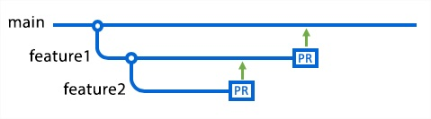
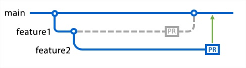

Como Trabalhar de Forma Integrada com Branch
Uma Branch é uma cópia (um espelho) de um repositório, criando como se fosse um trabalho paralelo, isso é útil principalmente quando se quer fazer testes ou desenvolver novos recursos sem afetar o desenvolvimento principal.
Uma Branch pode ser criada a partir do repositório principal (main) ou a partir de outra Branch.
Exemplos
Após fazer um clone de um repositório ou atualizar o mesmo através de pull, localmente pode-se criar a Branch usando os comandos próprios do Git para isso:
git checkout -b nome_da_branch
Nesse branch, edite, prepare e faça os commits das alterações da maneira usual, construindo o recurso com o número de commits necessários. Trabalhe no recurso e faça commits como faria sempre que usa o Git. Quando estiver pronto, envie os commits, atualizando o branch.
git status / git add / git commit
É recomendável enviar sua Branch para o repositório central remoto, pois outros membros de sua equipe podem utilizar os recursos ali desenvolvidos para outras finalidades, ou reaproveitamento de código, por exemplo.
git push -u origin nome_da_branch
Sua Branch pode depender de autorização através de pull request de quem controla o repositório principal, ou seu usuário ter essa autorização. A partir daí, garantindo que tudo esteja correto, pode-se fazer o merge, que é mesclar seu trabalho na Branch com o recurso principal na main.
Uma forma de minimizar a geração de conflitos é você fazer todo o seu trabalho localmente e salvar em uma “área de transferência”, assim quando você fizer o pull do repositório para atualizar, você pode “colar” seu trabalho na área em que sua Branch existe localmente, fazer add, commit e push, isso leva um tempo muito pequeno para ser feito e é uma boa prática.